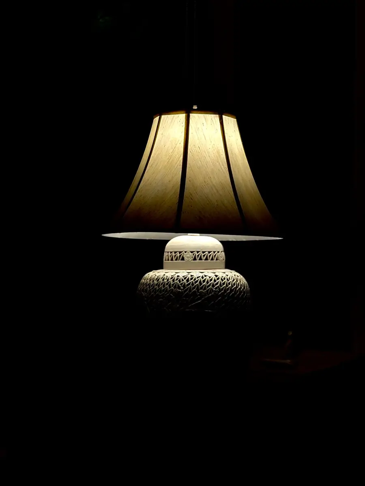
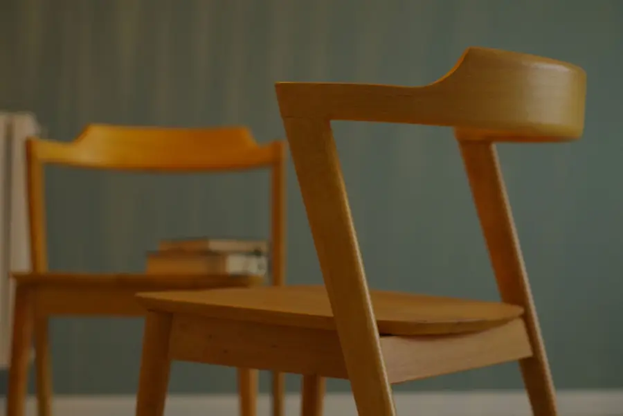
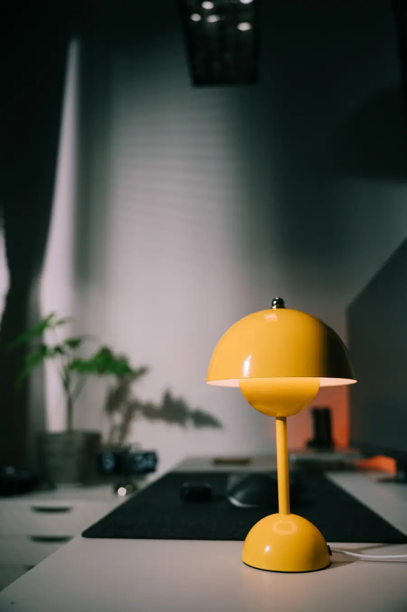
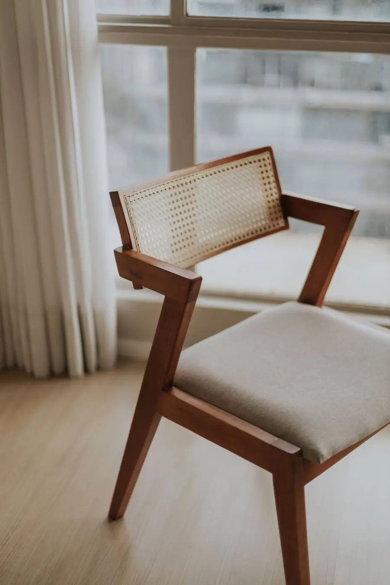
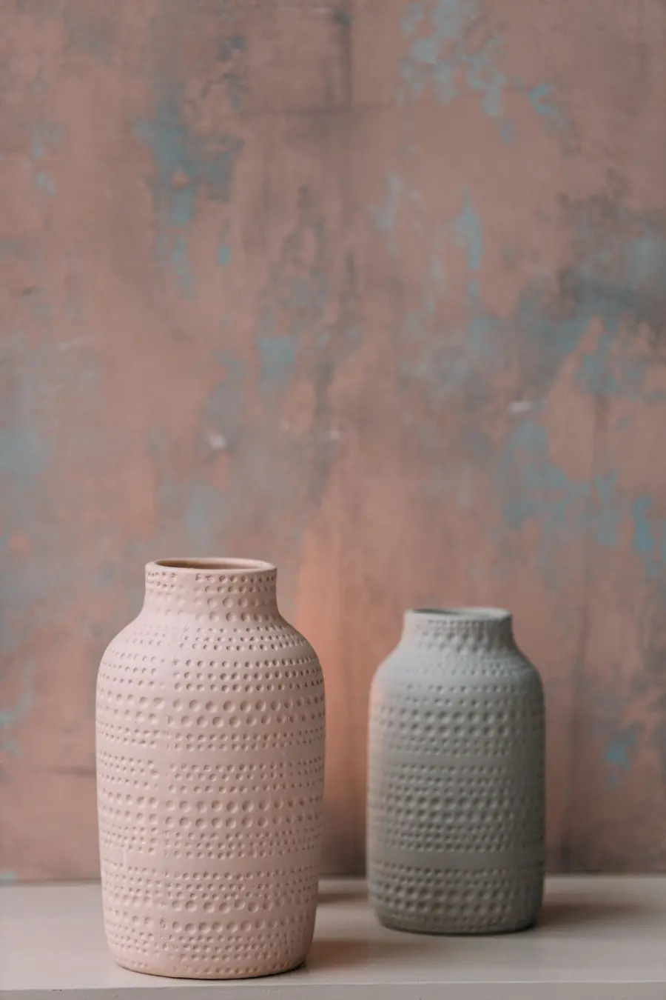
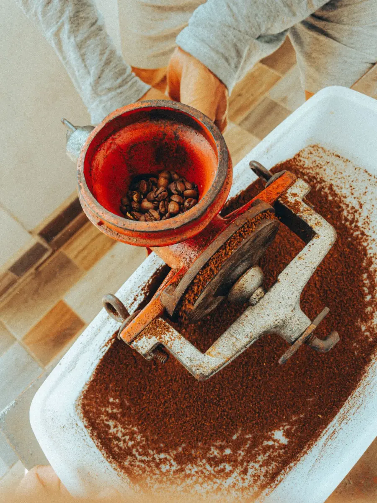
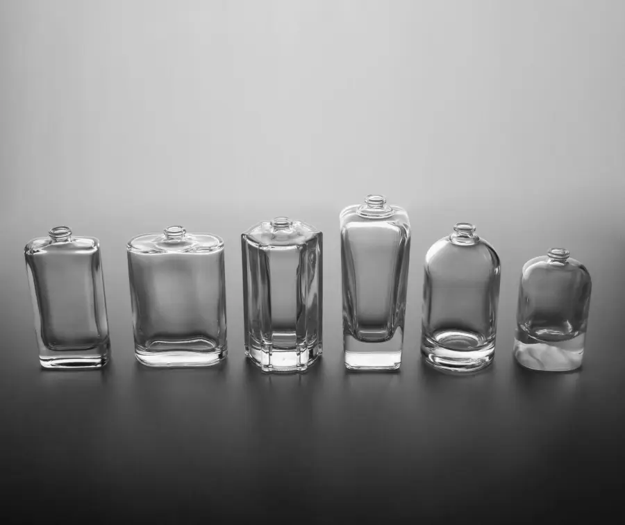
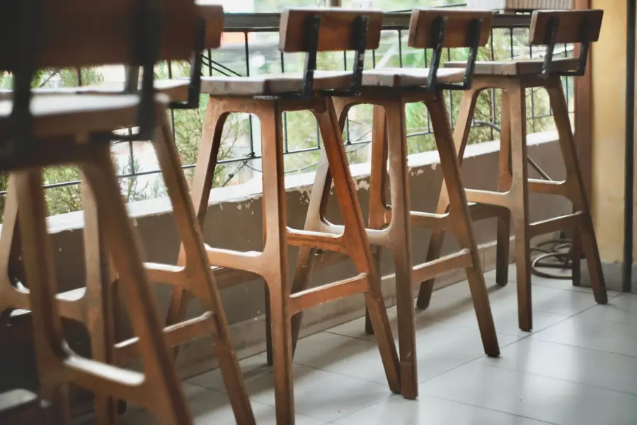

Nudo es un estudio de diseño industrial en Barracas, Buenos Aires. Diseñamos muebles, luminarias y utensilios, y seguimos la producción en talleres de la ciudad.

Gres esmaltado torneado en Lanús, pantalla de lino.

Roble con ensambles a caja y espiga, sin tornillos. Apilable de a cuatro.

Chapa repujada y pintada al horno. Brazo de 36 cm que gira sin herramientas.

Paraíso macizo y esterilla tejida a mano por una cooperativa de Tigre.

Serie de seis piezas en gres, con relieve sacado de un molde de junco.

Rediseño de un molino de 1950 para Tostadores del Sur: 14 piezas en vez de 31.

Familia de envases para una perfumería de San Telmo, soplados en Berazategui.

Para los bares del Dock Sud: 120 unidades en eucalipto, patas unidas por un aro de hierro.